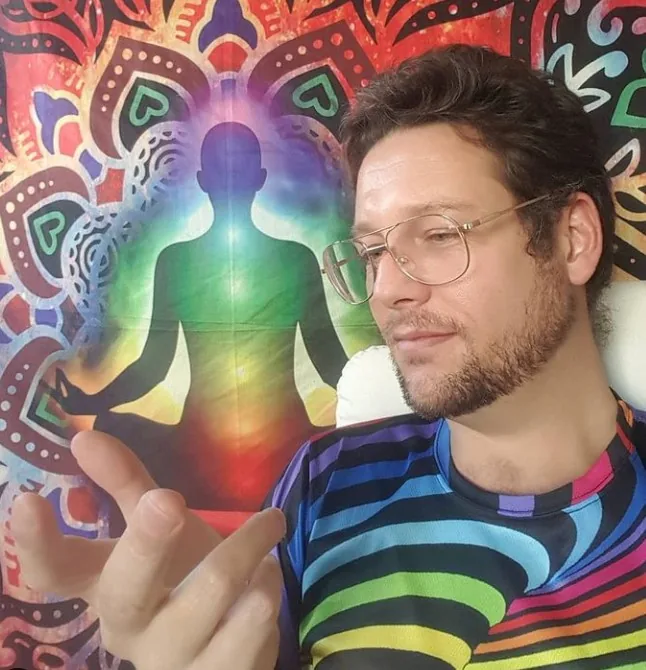

Aura of Intelligence
A human-guided digital companion shaped around memory, identity, extended reality and personal choice.
Luke Nathan Hayes is the person behind i C. infinity: a lifelong learner, practical worker, traveller, 360° photographer and artist based in Amity on Minjerribah.


Hands first, curiosity always, songs throughout
Luke's path runs through mechanical work, construction, transport, aviation, festivals, community volunteering, websites, artificial intelligence, games, virtual-reality photography and years of learning in his own way. These experiences feed the music and the ideas behind it.
Travel through Australia, India, Nepal, Thailand, the United Arab Emirates and beyond expanded that practical education. Temples, conferences, job sites, festivals, workshops and ordinary conversations all became part of the same learning environment.

One person, several names
Luke Catalyst is the idea builder. i C. infinity is the musical voice. Aura of Intelligence explores human-guided artificial intelligence. Strange But True turns unusual ideas into practical projects people can see and use.
Home: Amity, Minjerribah / North Stradbroke Island, Queensland, Australia.
Always exploring: music, travel, philosophy, community projects, artificial intelligence and visual storytelling.

A global and universal citizen
Luke describes himself as a global citizen because care should not stop at a suburb, state or national border. He also imagines humanity living far beyond Earth, supported by longer healthy lives and better tools.
That cosmic scale does not replace local responsibility. It makes local life more precious. Minjerribah, Brisbane, the people met while travelling and the health of the planet remain the ground beneath the bigger dream.

Philosophy without a lecture hall
Luke enjoys ideas that ask what consciousness is, how attention shapes experience and whether a person can deliberately grow beyond an old version of themselves.
He approaches philosophy through songs, games, travel, relationships, technology and spiritual reflection. Evidence, belief, metaphor and lived experience are allowed to meet, but they are not presented as identical forms of truth.
The artist name carries this approach: first notice more, then choose how to respond.

360° photography and virtual reality
Luke began using a GoPro MAX to record 360° photographs and video because an ordinary frame always leaves part of the place behind.
The camera became another way of thinking. A viewer can turn around, notice what the photographer did not centre and experience a beach, bridge, festival or journey as a space rather than a flat rectangle.
That same instinct appears throughout the music universe: no single point of view contains the whole story.
Luke Catalyst was never only a personal portfolio. It also held early sketches of projects that later became separate worlds.
A human-guided digital companion shaped around memory, identity, extended reality and personal choice.
Global Associations for Joyful Responsible Abundance on Earth: joy, care and enough for people and nature to flourish.
Games and public experiments that make civic learning, discussion and decision-making easier to enter.
Long-lasting relationships built through consent, honesty, shared responsibility and room for cultural difference.

Science, mystery and uncertainty
Luke follows climate, space weather, artificial intelligence, long life, ancient stories and theories about large natural cycles. Some ideas have strong scientific support; others are disputed, untested or belong to personal mythology.
This site keeps those differences visible. Curiosity is welcome, but a dramatic possibility is not treated as a proven fact. The useful question is often: what can people learn, test, prepare for or care for now?
Original photographs and visual experiments from I See Infinity and Luke Catalyst, now preserved as web-ready images without the India gallery.